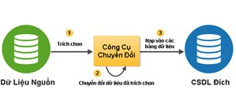

Công cụ ETL là gì
Công cụ ETL là phần mềm sử dụng để nhập dữ liệu vào cơ sở dữ liệu, kho dữ liệu từ các nguồn dữ liệu không đồng nhất. ETL là viết tắt của:
- Extract: Trích xuất dữ liệu từ các nguồn dữ liệu
- Transform: Chuyển đổi dữ liệu để sửa lỗi, làm sạch dữ liệu, thay đổi cấu trúc dữ liệu, sửa dữ liệu theo các tiêu chuẩn quy định…
- Load: Nhập dữ liệu đã chuyển đổi vào một DBMS, dịch vụ, định dạng file nào đó...
Một công cụ ETL quản lý việc chèn dữ liệu mới và cập nhật dữ liệu hiện có. Nó cũng có thể thực hiện chuyển đổi từ một hệ thống OLTP sang một hệ thống OLTP khác và từ một hệ thống OLTP đến kho dữ liệu phân tích.
Tại sao sử dụng công cụ ETL
Có rất nhiều lý do để sử dụng công cụ ETL. Trong số đó là việc tự động hóa xử lý dữ liệu phức tạp và lặp đi lặp lại mà không cần dòng code nào, việc chuyển đổi giữa các định dạng dữ liệu khác nhau, việc di chuyển dữ liệu giữa các DBMS, nhập dữ liệu vào các DBMS khác nhau, làm đầy kho dữ liệu phân tích hỗ trợ ra quyết định...
Giải pháp VIETBANDO ETL

VIETBANDO ETL là một công cụ ETL không gian (Extract, Transform và Load) mạnh mẽ dành riêng cho việc tích hợp các nguồn dữ liệu khác nhau để xây dựng và cập nhật cơ sở dữ liệu không gian địa lý, kho dữ liệu và các dịch vụ web với các biến đổi thực hiện trực tiếp.
VIETBANDO ETL cho phép khai thác dữ liệu từ các nguồn dữ liệu, chuyển đổi dữ liệu để sửa lỗi, làm sạch dữ liệu, thay đổi cấu trúc dữ liệu, làm cho dữ liệu phù hợp với các tiêu chuẩn, và tải các dữ liệu đã biến đổi vào một hệ thống quản lý cơ sở dữ liệu (DBMS), file GIS, hay dịch vụ web không gian địa lý.
VIETBANDO ETL là đặc biệt hữu ích cho việc tự động xử lý dữ liệu phức tạp và lặp đi lặp lại mà không cần code, chuyển đổi giữa các định dạng dữ liệu, di chuyển dữ liệu giữa các cơ sở dữ liệu, nhập dữ liệu vào cơ sở dữ liệu…
VIETBANDO ETL ổn định, nhanh, phù hợp các tiêu chuẩn, với hàng trăm chức năng và hỗ trợ đọc / ghi nhiều định dạng file, dịch vụ và DBMS.
- Hỗ trợ các DBMS: MySQL, PostgreSQL, Oracle, MS SQL Server,MongoDB;
- Hỗ trợ các định dạng file dữ liệu khác nhau đọc / ghi: text, Excel, Access, DBF, XML, …
- Nhiều dịch vụ / hệ thống: LDAP, CRM, …cũng như nhiều bước chuyển đổi.
VIETBANDO ETL cung cấp một tích hợp phù hợp với các thành phần không gian. Tất cả các bước được cung cấp bởi VIETBANDO ETL có thể ứng phó với các loại dữ liệu không gian địa lý. Một số bước chuyển dữ liệu không gian địa lý chuyên biệt đã được thêm vào (Sensor Observation Service (SOS), Catalogue Web Service (CWS), phân tích không gian ...) cho phép tích hợp mạnh mẽ dữ liệu không gian của doanh nghiệp.
Tính năng VIETBANDO ETL
Trích xuất dữ liệu từ:
- CSDL: MySQL, PostgreSQL, Oracle, MS SQL Server, MongoDB, VBD InMemoryDB.
- File XML
- File XLS
- File hệ thống thông tin
- Dữ liệu tạo ra
- File MS Access
- LDAP
- Hệ thống OLAP & SOLAP (Spatial OLAP)
- Định dạng dữ liệu không gian địa lý: Shapefile, GML 3.1.1, KML 2.2, tất cả định dạng được hỗ trợ bởi OGC
- Dịch vụ web OGC: Web Feature Service (WFS), Sensor Observation Service (SOS), Catalogue Web Service (CWS)
Chuyển đổi dữ liệu:
- Truyền dữ liệu dựa trên Engine (không phát sinh code)
- Tìm kiếm dữ liệu trong cơ sở dữ liệu, file hoặc bộ nhớ
- Tính toán
- Script: Javascript, SQL, RegExp
- Tách dữ liệu
- Ánh xạ
- Lựa chọn
- Phân vùng
- Lọc
- Trộn
- Kết hợp
- Nhân bản
- Gom cụm
- Xoay vòng
- Phân tích dữ liệu không gian địa lý: bộ đệm, trọng tâm, khoảng cách, giao lộ, tổng hợp...
- Xử lý dữ liệu địa lý nâng cao: clipping, delaunay, đơn giản hóa / làm mịn hình học, tính năng chia tách…
- Tích hợp không gian
- Xem trước bản đồ
Tải dữ liệu vào định dạng nhất định:
- CSDL: MySQL, PostgreSQL, Oracle, MS SQL Server, MongoDB, VBD InMemoryDB.
- Định dạng dữ liệu không gian địa lý: Shapefile, GML 3.1.1, KML 2.2, tất cả định dạng được hỗ trợ bởi OGC
- Dịch vụ web OGC: Web Feature Service (WFS), Sensor Observation Service (SOS), Catalogue Web Service (CWS)
- Tải theo phân vùng
- Tải theo khối
- Tải song song
- Tải phân cụm
Môi trường:
- Giao diện đầy đủ để chỉnh sửa tất cả các tùy chọn chuyển đổi dữ liệu
- Công cụ script: thực hiện các job và biến đổi dữ liệu
- Máy chủ Web: thực hiện từ xa và phân nhóm hoàn hảo trong môi trường điện toán đám mây để xử lý các tập dữ liệu rất lớn
- Lập trình API
- Module hệ sinh thái